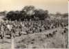

| << Previous | Index | Next >> | ||
|  |  |
 |
||
Vista parcial da parada em plena mata do Úcua, onde a companhia de instrução realiza exercícios de ginástica educativa. Os cerca de seiscentos instruendos que inicialmente integravam o 26º. curso de comandos cumpriram nesta zona três dias de extenuante actividade física, acompanhada de um apertadíssimo controle sobre consumo de água, motivo pelo qual esta prova foi e será sempre conhecida e designada entre os que a cumpriram por Prova da Sede. Por entre os instruendos podem ver-se elementos do corpo de instrução que procuram que nada escape ao seu controle.
Ao fundo, aproveitando a sombra de um muxito, situa-se a enfermaria de campanha onde são assistidos os instruendos que comprovadamente sucumbem ao cansaço.
Esta foto deve ter sido tirada na manhã do segundo dia da prova, dado que ainda se notam muitos instruendos com a cabeleira intacta. No final da prova todos os instruendos ficaram de cabeça rapada.
Photo album created with Web Album Generator